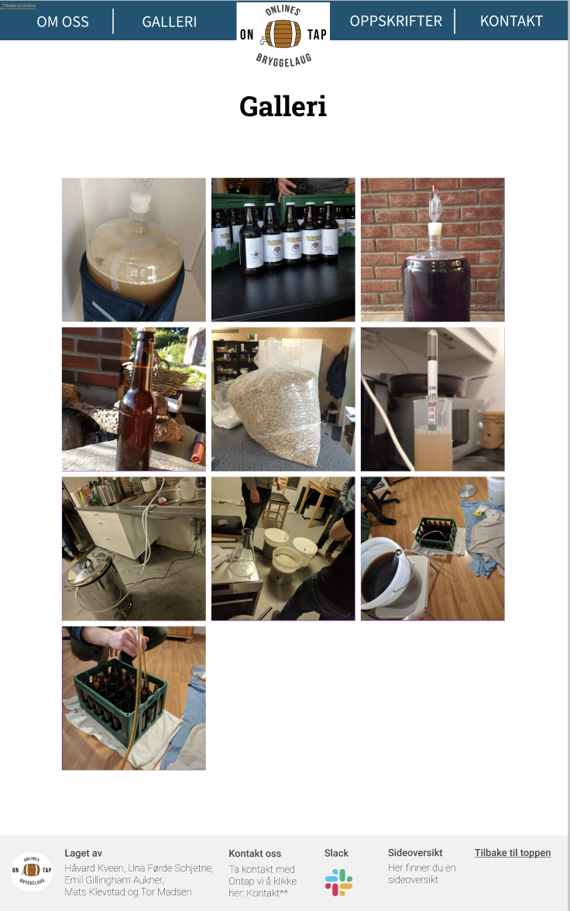

Prosjekt Innlevering P2
Dokument Detaljer
- Projekt Innlevering P2
- Laget av: Laget av Emil, Håvard, Mats, Tor og Una.
- Leveringsdato: 4. oktober 2020
Administrative Detaljer
- Klientens Navn: Hjalti
- Nettsidens Navn: Ontap
- Kontaktperson: Hjalti
Formål, Mål og Målgruppe
Målet med nettsiden er å være en informativ reklame slik at informatikkstudenter på NTNU er klar over tilbudet, og har en oversiktlig måte å ta kontakt. Dette skal vi utføre ved å ha et galleri, oppskriftsliste og infoside. Vi skal også ha en kontaktside som linker direkte til deres sosiale medier samt en epost sende funksjon slik at det er lettere for interesserte brukere å ta kontakt og finne ut mer om Ontap og eventuelt låne utstyr. Vi tenker også at nettsiden skal ha en tilbake lenke funksjon slik at man kan gå fra Ontap sin side tilbake til Online sin side. Brukerne skal være medlemmer av Ontap og informatikkstudenter som er interessert i å bli medlem av Ontap. De skal også ha mulighet til å kontakte Ontap om lån av bryggeutstyr. Hovedbrukeren er altså informatikkstudenter som vil brygge øl og bli kjent med andre som er interessert i det samme.
Navigasjons Struktur
Tekst
Malen for Sidene
tekst
Innhold for Hver Side
Fremside
Tekst
Om Oss
Tekst
Kontakt
Tekst
Oppskrifter
Tekst
Galleri
Galleri-siden skal inneholde et utvalg av bilder som viser frem Ontap. Der er det blant annet bilder fra ølbryggingsprosessen og resultatene. Selve bildene på siden skal være like store kvadratiske thumbnails med størrelse 436px x 436px av bildene slik at siden laster inn raskt. På en standard skjerm skal bildene være i et 3 x 4(denne varierer med antall bilder. Foreløbig er det 10 bilder, dermed er det foreløbig 4 i y retning) grid, med avstand på 14px mellom thumbnailene og marg 10% på høyre og venstre side. Her er en mockup av hele galleri-siden:
Bildene skal øke med 18px (9 px i hver retning) i størrelse når musepekeren er over et bilde. Senterpunktet til bildet skal holde seg på samme sted når bilde øker i størrelse. Det skal ta et halvt sekund for bilde å øke i størrelse (dette kan hende endres senere). Her er et eksempel på dette:

Thumbnailsene skal linke til en visning av det originale bildet når man trykker på det. Bilde skal da vises i sitt originale oppløsning og størrelseformat. Rundt skal det være en ramme som er like høy som bildet, men er 130px større i venstre og høyre retning. Midt mellom kanten til rammen og bildet skal det være knapper for å gå til neste bilde på høyre og forrige bilde på venstre side. Knappene skal være midtstilt på y akse i rammen. Resten av siden utenom banneren får et mørkt filter or å sette bildet i fokus. Her er mockup av det:

Sidekart
Tekst
Minimumkrav Javascript
Tekst
Planen Fremover
Tekst